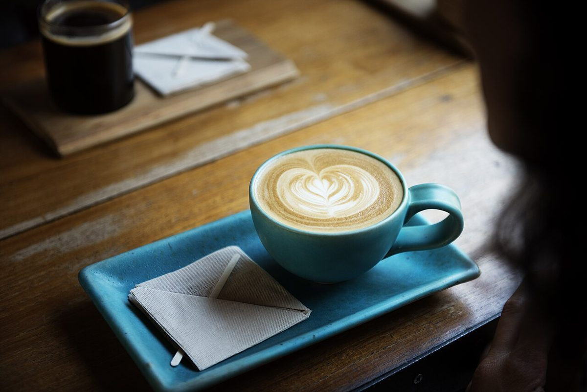

カフェ / 新潟県十日町市
PUNA
新潟県十日町市にあるカフェ「PUNA cafe」のご案内ページです。営業時間やメニューなど、詳しいことは準備中。まずはInstagramをのぞいてみてください。


制作側の連想
四文字と、四本の弦
「PUNA」は四文字です。そこから制作側は、四本の弦を張るウクレレを連想しました。そこでこのサイトは、ウクレレの「コード図」を模して、P・U・N・Aを四本の弦に見立てて作っています。お店の理念や店名の由来とは無関係の、制作側の連想です。お店でウクレレを扱っているかどうかも分かりません。
四本の弦(イメージ)
P・U・N・A、ひと弦にひとつ。
写真は十日町市のものではありません。弦ごとに色や質感で選んだ、国外・撮影地不明のフリー素材です。お店で提供するものを示すものではありません。
- P粒

撮影地不明のイメージ - Uうつわ

撮影地不明のイメージ - N木目

国外のイメージ(スウェーデン) - A葉

国外のイメージ(フィリピンと推定)
ご案内
お店のこと(確認できたものだけ)
| 所在地 | 〒948-0088 新潟県十日町市駅通り４−１ |
|---|---|
| 電話 | 025-755-5072 |
| 営業時間 | 準備中 |
| 定休日 | 準備中 |
| ご予約 | 準備中 |
| 駐車場 | 準備中 |
| SNS | Instagram @punacafe.tokamachi |